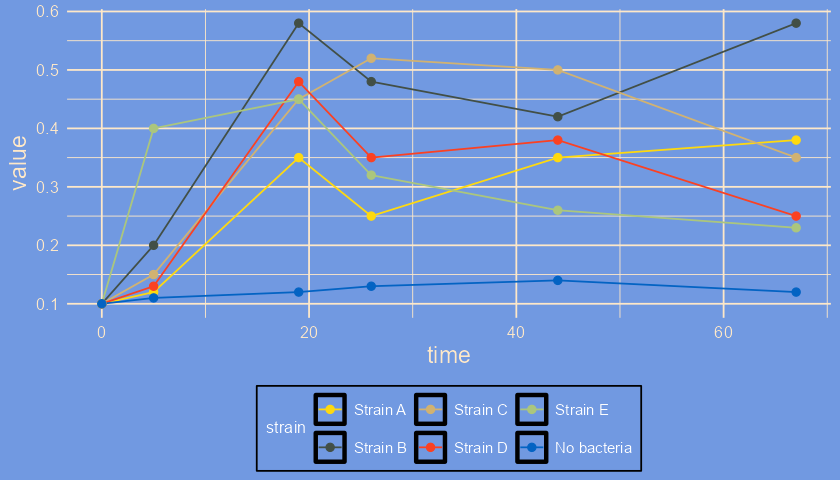
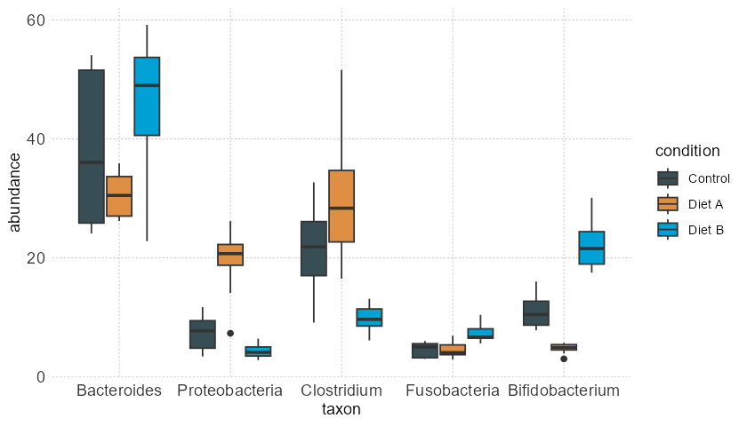
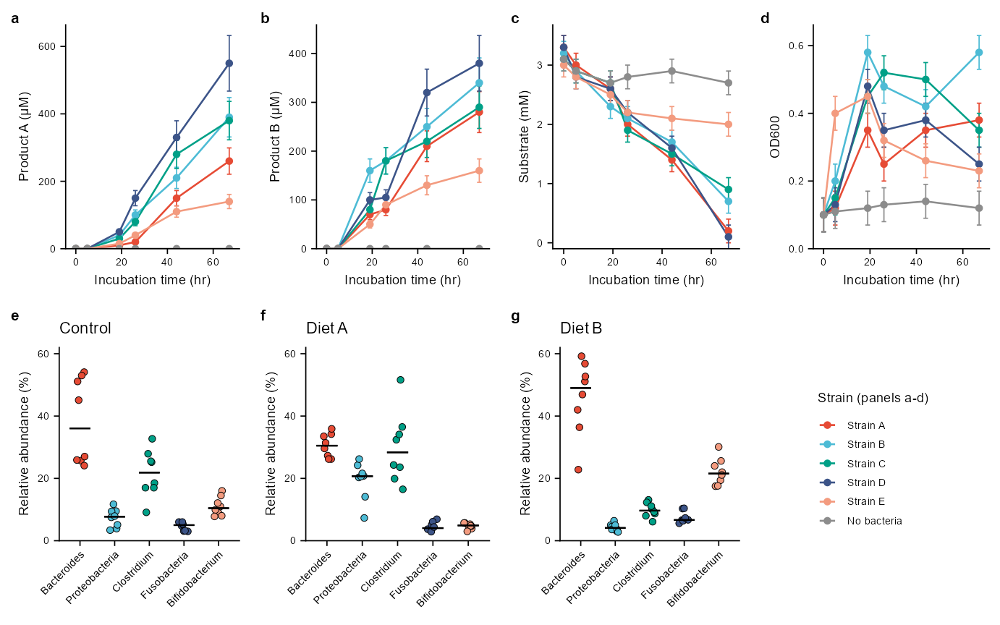
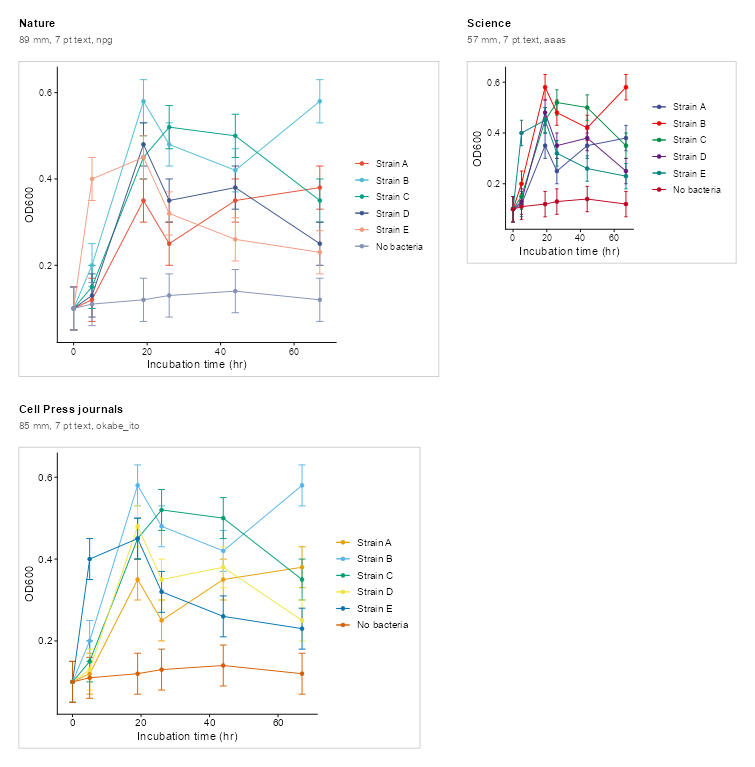

themeset is an R package for reusable plot templates and color scales. It provides:
- 49 theme sets, 14 of which bring matching color and fill scales, among them journal sets such as
nejmandlancet - markdown-aware
ggplot2theme wrappers - discrete color scales that can be added directly to plots or picked by name, from ggsci and from optional palette packages
- templates of 13 journals, with their figure widths, text sizes, panel tags and palettes, to draw one figure for several journals, compare them and check the result
- a few custom themes for publication and presentation work
Installation
Install the development version from GitHub:
# install.packages("remotes")
remotes::install_github("vanhungtran/themeset")Or install from a local copy of the project root:
install.packages(".", repos = NULL, type = "source")Example
library(ggplot2)
library(themeset)
# Simulated growth curves of five strains and an uninoculated control
od <- subset(example_growth(), measure == "OD600")
p <- ggplot(od, aes(time, value, color = strain)) +
geom_line() +
geom_point(size = 2)
apply_theme_set(p, "simpsons")
You can also use a theme and a color scale independently:
ggplot(example_taxa(), aes(taxon, abundance, fill = condition)) +
geom_boxplot() +
theme_nyt() +
scale_fill_jama()
example_growth() and example_taxa() are small simulated data sets that come with the package.
Sets and palettes
apply_theme_set(p, "nejm") # the classic theme with the NEJM palette
list_theme_sets() # the names of the 49 sets
list_color_scales() # the names of the palettes, by package
# any palette by name, with any theme
ggplot(example_taxa(), aes(taxon, abundance, fill = condition)) +
geom_boxplot() +
scale_fill_set("lancet")A figure for a paper
A figure for a paper is a grid of panels that share one look. The multi-panel article builds this one for print, 183 mm wide with 7 pt text, from the example data, and restyles the whole figure by changing the name of the set.

Journal figures
The same figure often has to fit more than one journal. compare_journals() draws a plot once for each journal, at the width of a column of that journal and in its theme and palette, side by side and to scale:
p <- ggplot(od, aes(time, value, color = strain)) +
geom_errorbar(aes(ymin = value - se, ymax = value + se), width = 2) +
geom_line() +
geom_point() +
labs(x = "Incubation time (hr)", y = "OD600", color = NULL)
journals <- compare_journals(p, c("nature", "science", "cell"), sheet_mm = 250)
journals_size <- attr(journals, "size_mm")
journals
journal_check() checks a figure against the limits of a journal (the text, the lines, the panel tags, the height and whether the colors can be told apart), save_journal_figure() saves it at the size of a column, and compare_palettes() tells which palettes keep their colors apart for readers with color-vision deficiency. The numbers of the templates come from the author guides of the journals, read in October 2026: read the current guide before you submit. The article on journal figures has the details and the sources.
For the figures of one paper, journal_fix() repairs what journal_check() finds, with small changes, and checks again; match_style() gives a figure the theme of another and the same color for each group the two share; and journal_audit() checks all the figures for a journal and against each other, for example a strain that is blue in one figure and red in the next.
More kinds of figures
The gallery draws a circular network, a circos plot, a four-panel figure, a grouped dot plot and a composite figure of nine panels with heat maps and an oncoprint, from simulated data, with the palettes and the journal themes of themeset. The packages that draw them (ggraph, circlize, patchwork, ComplexHeatmap and ggridges) are suggested, not required.
Documentation
Tutorials and the function reference are on the package website, https://vanhungtran.github.io/themeset/:
- Introduction to themeset
- Theme Sets and Color Scales
- Markdown-Enabled Themes
- Global and Custom Themes
- A Multi-Panel Figure
- Comparing Figures Across Journals
- A Gallery of Figure Types
- A Showcase of Themes and Colors
The same articles, with their figures, are in the repository as Markdown, for reading on GitHub: articles/.
Credits
themeset does not contain the themes and palettes that it offers. It calls the packages below by name, and the work is theirs: ggplot2, ggthemes (Jeffrey B. Arnold), hrbrthemes (Bob Rudis), tvthemes (Ryo Nakagawara), cowplot (Claus O. Wilke), OlinkAnalyze (Olink), ggsci (Nan Xiao), flexoki (Christopher T. Kenny, for the Flexoki color scheme of Steph Ango), ggtext (Claus O. Wilke and Brenton M. Wiernik) and, when they are installed, wesanderson (Karthik Ram and Hadley Wickham), biopalette (Yibin Zhou) and ggpalettes (Yaoxiang Li). The journal figures also use farver (Thomas Lin Pedersen, Berendea Nicolae and Romain François), the Okabe-Ito palette of Masataka Okabe and Kei Ito, which base R provides, and, when it is installed, colorspace (Ross Ihaka, Paul Murrell, Kurt Hornik, Jason C. Fisher, Reto Stauffer, Claus O. Wilke, Claire D. McWhite and Achim Zeileis). The gallery draws with igraph (Gábor Csárdi, Tamás Nepusz and others), ggraph and patchwork (Thomas Lin Pedersen), circlize and ComplexHeatmap (Zuguang Gu) and ggridges (Claus O. Wilke), which are suggested as well. The journal sets use palettes that are named after journals; themeset is not affiliated with any journal. The sources and credits section of the article on theme sets and color scales has the details.